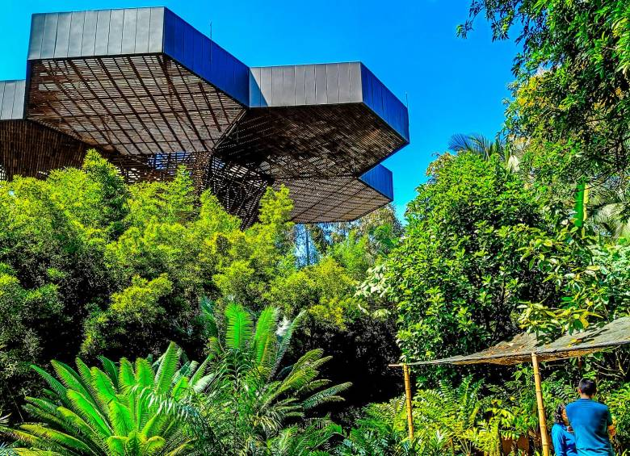

"Antioquia"
Región: Andina
Puntos de Interés
Guatapé y Piedra del Peñol
Un lugar turístico de Medellín es Guatapé, un colorido pueblo que se encuentra a 83 kilómetros de Medellín y una de las excursiones más solicitadas por los turistas que llegan a la ciudad.
Plantación de café colombiano
Si el café forma parte de tu vida cotidiana pero desconoces cómo llega del grano a tu taza, en Medellín puedes aprovechar para visitar algunas de las fincas de café que hay cerca de la ciudad y descubrir todos sus secretos.
Jardín Botánico de Medellín
Si eres amante de la naturaleza, el Jardín Botánico de Medellín, cuyo nombre es Jardín Botánico Joaquín Antonio Uribe, es el lugar para tí.
La comuna 13
La Comuna 13, conocida como 'La cuna de Pablo Escobar', le declaró la guerra al Estado volviéndose el punto cero de una lucha sangrienta entre paramilitares como el ELN, las FARC y los CAP (Comandos Armados del Pueblo), el ejército, los narcotraficantes y por consiguiente, el resto de la población.
Gastronomía de la región